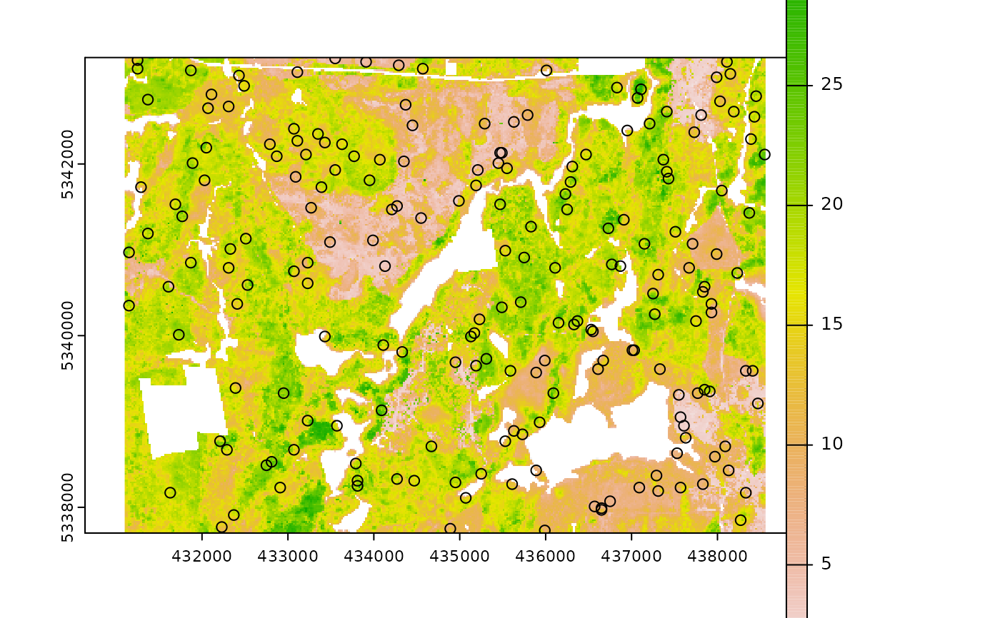

Conditioned Latin Hypercube Sampling using clhs functionality.
Usage
sample_clhs(
mraster,
nSamp,
iter = 10000,
cost = NULL,
existing = NULL,
access = NULL,
buff_inner = NULL,
buff_outer = NULL,
plot = FALSE,
details = FALSE,
filename = NULL,
overwrite = FALSE,
...
)Arguments
- mraster
spatRaster. ALS metrics raster.
- nSamp
Numeric. Number of desired samples.
- iter
Numeric. Value giving the number of iterations within the Metropolis-Hastings process.
- cost
Numeric/Character. Index or name of covariate within
mrasterto be used to constrain cLHS sampling. If default (NULL), a cost constraint is not used.- existing
sf 'POINT'. Existing plot network.
- access
sf 'LINESTRING' or 'MULTILINESTRING'. Access network.
- buff_inner
Numeric. Inner buffer boundary specifying distance from access where plots cannot be sampled.
- buff_outer
Numeric. Outer buffer boundary specifying distance from access where plots can be sampled.
- plot
Logical. Plots output strata raster with samples.
- details
Logical. If
FALSE(default) output is only stratification raster. IfTRUEreturn a list where$detailsis additional stratification information and$rasteris the output stratification spatRaster.- filename
Character. Path to write output samples.
- overwrite
Logical. Choice to overwrite existing
filenameif it exists.- ...
Additional arguments for clhs sampling. See
clhs.
References
Minasny, B. and McBratney, A.B. 2006. A conditioned Latin hypercube method for sampling in the presence of ancillary information. Computers and Geosciences, 32:1378-1388.
Minasny, B. and A. B. McBratney, A.B.. 2010. Conditioned Latin Hypercube Sampling for Calibrating Soil Sensor Data to Soil Properties. In: Proximal Soil Sensing, Progress in Soil Science, pages 111-119.
Roudier, P., Beaudette, D.E. and Hewitt, A.E. 2012. A conditioned Latin hypercube sampling algorithm incorporating operational constraints. In: Digital Soil Assessments and Beyond. Proceedings of the 5th Global Workshop on Digital Soil Mapping, Sydney, Australia.
See also
Other sample functions:
sample_ahels(),
sample_balanced(),
sample_existing(),
sample_nc(),
sample_srs(),
sample_strat(),
sample_sys_strat(),
sample_systematic()
Examples
#--- Load raster and existing plots---#
r <- system.file("extdata", "mraster.tif", package = "sgsR")
mr <- terra::rast(r)
e <- system.file("extdata", "existing.shp", package = "sgsR")
e <- sf::st_read(e)
#> Reading layer `existing' from data source
#> `/home/runner/work/_temp/Library/sgsR/extdata/existing.shp'
#> using driver `ESRI Shapefile'
#> Simple feature collection with 200 features and 1 field
#> Geometry type: POINT
#> Dimension: XY
#> Bounding box: xmin: 431110 ymin: 5337710 xmax: 438530 ymax: 5343230
#> Projected CRS: UTM_Zone_17_Northern_Hemisphere
a <- system.file("extdata", "access.shp", package = "sgsR")
ac <- sf::st_read(a)
#> Reading layer `access' from data source
#> `/home/runner/work/_temp/Library/sgsR/extdata/access.shp'
#> using driver `ESRI Shapefile'
#> Simple feature collection with 167 features and 2 fields
#> Geometry type: MULTILINESTRING
#> Dimension: XY
#> Bounding box: xmin: 431100 ymin: 5337700 xmax: 438560 ymax: 5343240
#> Projected CRS: UTM_Zone_17_Northern_Hemisphere
sample_clhs(
mraster = mr,
nSamp = 200,
plot = TRUE,
iter = 100
)

#> Simple feature collection with 200 features and 4 fields
#> Geometry type: POINT
#> Dimension: XY
#> Bounding box: xmin: 431110 ymin: 5337730 xmax: 438530 ymax: 5343190
#> Projected CRS: UTM Zone 17, Northern Hemisphere
#> First 10 features:
#> zq90 pzabove2 zsd type geometry
#> 53648 15.40 85.7 4.60 new POINT (432070 5340090)
#> 56987 18.50 82.0 5.81 new POINT (438390 5339910)
#> 53479 20.20 71.5 6.19 new POINT (435850 5340110)
#> 41784 12.20 75.3 3.40 new POINT (432170 5340790)
#> 13849 4.47 72.0 0.86 new POINT (435570 5342410)
#> 3681 16.70 91.5 4.42 new POINT (438510 5343010)
#> 37582 3.95 21.5 0.82 new POINT (433990 5341050)
#> 84618 8.24 91.4 1.72 new POINT (437150 5338070)
#> 4820 5.42 66.0 1.18 new POINT (433490 5342930)
#> 72403 13.70 47.2 3.16 new POINT (435690 5338870)
sample_clhs(
mraster = mr,
nSamp = 400,
existing = e,
iter = 250,
details = TRUE
)
#> $clhs
#> [1] 15151 61657 31518 8482 37636 19381 42107 67289 2699 73969 36068
#> [12] 22164 5320 25791 54985 10158 74454 68856 79500 16164 58659 67935
#> [23] 20433 85555 71022 85135 64642 17635 15695 49701 13617 13217 12633
#> [34] 1932 46873 4937 70153 61088 50135 90059 16867 37095 28415 24619
#> [45] 56906 89113 51948 55320 63927 43535 52235 16019 71862 4127 29442
#> [56] 54578 42606 14103 85699 36255 103 77556 15049 49254 90452 67494
#> [67] 44835 53441 88496 7655 22810 8150 59769 51115 50766 2292 61435
#> [78] 61542 28576 27520 40423 46933 63448 35881 36326 6629 48012 24958
#> [89] 18913 52851 65170 80606 30660 27639 86414 73377 14574 27183 30682
#> [100] 35999 70333 56212 75135 25278 71529 18522 38225 89496 16612 75078
#> [111] 68372 36770 86263 44002 82377 67729 44367 41772 21499 23778 81923
#> [122] 14752 46310 31766 32595 70036 87618 6136 57171 69757 25207 69386
#> [133] 21258 58088 29699 35160 1125 37888 45294 75471 70281 16890 49426
#> [144] 87890 20449 44738 63123 65519 25100 33156 47778 64436 79120 73492
#> [155] 34131 83680 11178 52059 87270 68834 59822 80783 56255 20903 62779
#> [166] 52240 89713 65661 49777 27826 60008 63865 15259 51553 88750 54527
#> [177] 34377 54953 60728 53203 26862 35191 15643 80905 37937 26021 10431
#> [188] 2519 33327 75891 23860 38347 992 60891 62583 66462 57831 23620
#> [199] 63894 72526 1 2 3 4 5 6 7 8 9
#> [210] 10 11 12 13 14 15 16 17 18 19 20
#> [221] 21 22 23 24 25 26 27 28 29 30 31
#> [232] 32 33 34 35 36 37 38 39 40 41 42
#> [243] 43 44 45 46 47 48 49 50 51 52 53
#> [254] 54 55 56 57 58 59 60 61 62 63 64
#> [265] 65 66 67 68 69 70 71 72 73 74 75
#> [276] 76 77 78 79 80 81 82 83 84 85 86
#> [287] 87 88 89 90 91 92 93 94 95 96 97
#> [298] 98 99 100 101 102 103 104 105 106 107 108
#> [309] 109 110 111 112 113 114 115 116 117 118 119
#> [320] 120 121 122 123 124 125 126 127 128 129 130
#> [331] 131 132 133 134 135 136 137 138 139 140 141
#> [342] 142 143 144 145 146 147 148 149 150 151 152
#> [353] 153 154 155 156 157 158 159 160 161 162 163
#> [364] 164 165 166 167 168 169 170 171 172 173 174
#> [375] 175 176 177 178 179 180 181 182 183 184 185
#> [386] 186 187 188 189 190 191 192 193 194 195 196
#> [397] 197 198 199 200
#>
#> $samples
#> Simple feature collection with 400 features and 5 fields
#> Geometry type: POINT
#> Dimension: XY
#> Bounding box: xmin: 431110 ymin: 5337710 xmax: 438550 ymax: 5343230
#> Projected CRS: UTM_Zone_17_Northern_Hemisphere
#> First 10 features:
#> type zq90 pzabove2 zsd FID geometry
#> 1 new 17.80 88.3 4.95 NA POINT (436790 5342350)
#> 2 new 6.37 70.8 1.44 NA POINT (437910 5339630)
#> 3 new 16.70 94.8 3.79 NA POINT (432350 5341410)
#> 4 new 17.80 90.8 5.51 NA POINT (437310 5342750)
#> 5 new 15.70 83.3 4.52 NA POINT (438330 5341070)
#> 6 new 14.20 88.5 3.13 NA POINT (434050 5342110)
#> 7 new 18.40 81.7 4.69 NA POINT (435430 5340790)
#> 8 new 10.80 52.5 2.80 NA POINT (435830 5339270)
#> 9 new 15.40 59.9 4.12 NA POINT (432130 5343070)
#> 10 new 16.70 93.5 4.77 NA POINT (433410 5338750)
#>